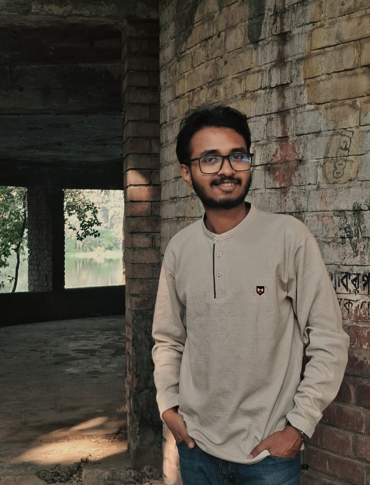

Plant Biology
Exploring plant diversity, biology and their interactions with the environment.
BOTANY • RESEARCH • NATURE
Botany student and aspiring researcher with an interest in plant biology, biodiversity, fungi and the fascinating relationships between living organisms and their environment.

ABOUT ME
I am a Botany student with a growing interest in research, biodiversity and the remarkable complexity of the natural world.
My academic interests span plant biology, fungi, ethnobotany, biotechnology and environmental research.
WHY BOTANY?
I grew up in Rangamati, where hills, trees, and nature were a part of my life. Books and plants were always with us at home. My parents loved both, and somehow it all landed in the hearts of the three brothers naturally.
Hills and trees were my best friends in my younger days. I have never felt loneliness when I was around nature. I love to be curious about plants and flowers. To me, they were good talking companions, and I always believed they could hear me.
For quite a long time, I have been interested in studying biotechnology, especially plant tissue culture. However, things did not happen the way I wanted. Now, I am studying Botany at the University of Barishal.
And somehow, I do not regret joining the department.
Because the more I study Botany, the more interest I develop for it.
I am glad that I have chosen to pursue my career in Botany. It is my hobby, as well as an intellectual course.
RESEARCH
Exploring plant diversity, biology and their interactions with the environment.
Interested in macrofungal diversity, identification, ecology and their potential uses.
Understanding and documenting biological diversity through field-based observation and research.
Interested in biological applications that can contribute to sustainable solutions.
PROJECTS
My projects and research work will appear here.
MY JOURNEY
This section will tell the story of my academic journey, experiences, achievements and the places that have shaped my interests.
CONTACT
More contact information will be added here soon.